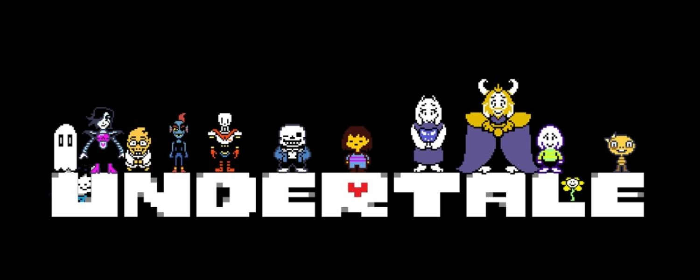

save point edition
Esercizi JS2, ma dentro il sottosuolo.
Input, condizioni, cicli, switch e numeri casuali diventano piccoli encounter da completare, tra box bianchi, cuore rosso e atmosfera pixel.

* Ti senti pieno di determinazione.
* 6 esercizi sono apparsi.
SAVE pronto
if / else
01
Controllo eta
Inserisci un'eta e lascia che il box scelga la tua categoria.
condizioni
02
Temperatura
Scrivi i gradi attuali e misura il clima del sottosuolo.
for
03
Tabellina
Scegli un numero e genera la sua tabellina da 1 a 10.
cicli
04
Numeri dispari
Calcola quanti dispari ci sono da 1 a un limite e la loro media.
switch
05
Distributore
Scegli una bevanda come se fossi davanti a un negozio nascosto.
Math.random()
06
Sfida ai dadi
Imposta il numero di lanci e lascia partire il piccolo encounter casuale.
Giocatore 1
0
Giocatore 2
0